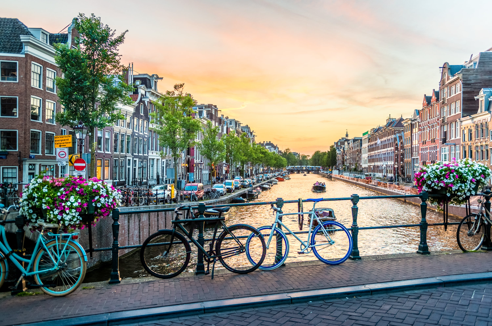
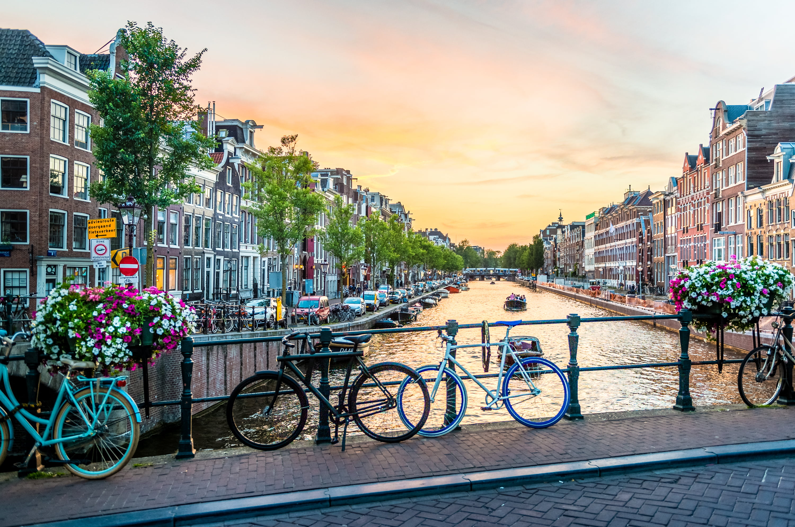

Agency Name
"Travel is never a matter of money, but of courage." Paulo Coelho
Kukulcán Temple
Entre as principais atrações do México está o Templo de Kukulcán, localizado na cidade antiga de Chichén Itzá, em Yucatán. Este monumento é considerado uma das principais maravilhas do mundo, construídas pelos povos Maias e Toltecas em formato de pirâmide com 30 metros de altura. Os turistas podem escalá-lo (para quem tem fôlego) ou apenas admirá-lo de longe, podendo apreciar sua beleza e os mistérios ao redor da construção. Construído em honra ao imperador Kukulcán, os degraus representam os 365 dias do ano e com enigmáticas astrológicas, onde cultuavam o sol.
Muitos conhecem Amsterdã como capital da Holanda e seu idioma oficial é o holandês, uma língua gutural com algumas raízes alemãs, francesas e inglesas. Os holandeses são pessoas muito amáveis e educadas, não se preocupe na hora de se comunicar com eles pois todos falam inglês como segunda língua (se você tem o inglês avançado ou fluente, fique tranquilo).


 

Amsterdam
Eiffel Tower
Sua parada na Torre Eiffel é obrigatória se você for para a França! Com 324 metros de altura, a torre foi construída na cidade de Paris em 1889 pelo arquiteto Gustave Eiffel, onde recebe milhares de turistas do mundo, aproximadamente 250 milhões de pessoas. O monumento é uma das principais maravilhas arquitetônicas, sendo o principal cartão-postal da cidade parisiense. Possui três plataformas de observação, e a última (no topo da torre) é possível ter uma visão 360 graus da capital podendo chegar a mais de 60 km de distância.


O Peru abriga uma das sete maravilhas do mundo, as famosas ruínas de Machu Picchu, localizada no Vale Sagrado dos Incas, em Cusco. É um lugar mágico cheio de história, podendo recorrer dentro das suas ruínas e visitar a montanha sagrada, tirar fotos com lhamas e aprender sobre as antigas culturas pré-hispânicas do local.


Machu Picchu
Cristo Redentor
O país é conhecido por sua natureza, fauna e flora, e nelas podemos apreciar construções incríveis como o Cristo Redentor, no Rio de Janeiro, localizado no topo do morro do Corcovado. A estátua é considerada uma das sete maravilhas do mundo e a mais famosa Art Decó, recebendo turistas do mundo todo. Para chegar até os pés do Cristo Redentor, você deverá percorrer pelos 220 degraus e apreciar a bela vista da cidade. É possível chegar no monumento através de um passeio de trem que atravessa também a Mata Atlântica até chegar ao topo do Corcovado, tudo isso durante vinte minutos.